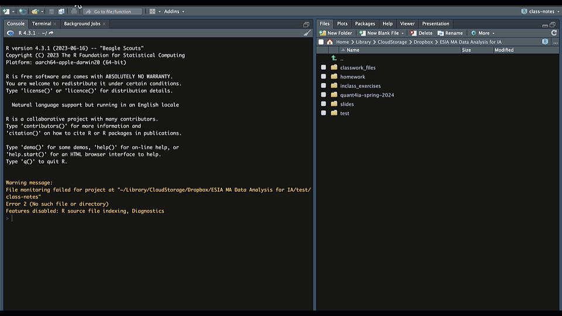

02:00
Meet ouR Tech Stack
RStudio and Quarto
RStudio
- RStudio is an integrated development environment (IDE) for R
- RStudio has four panes
- Source-where you write code
- Console-where you run code
- Environment-where you see objects in memory
- Files/Plots/Packages/Help-where you can navigate files, see plots, install packages, and get help
- Let’s open RStudio and have a look around
Quarto
- Quarto is an open-source scientific publishing platform
- Allows you to integrate text with code
- Kind of like a word processor for data science
- Can use it to create reports, books, websites, etc.
- Can make HTML, PDF, Word, and other formats
- Can use R, Python, Julia, and other languages
Project Oriented Workflow
- Always start a document in a project folder
- That way you don’t have to do
setwd - Also can share easily with other people
- That way you don’t have to do
- Go to File>New Project
- Create a Quarto project folder
Visual Editor
- There are two ways to edit Quarto docs
- Source (markdown)
- Visual editor
- Visual editor
- WYSIWYM
- Approximates appearance
- Try both and see what you like
Rendering Documents
- Rendering = converting to another format
- Default format is HTML
- Can also render to PDF, Word, etc.
- To render a Quarto document
- Click on the Render button
- Or keyboard shortcut (Cmd/Ctrl + Shift + K)
- Click on the Render button
- By default, Quarto will preview the document in your browser
- But you can also preview in Viewer pane
- Click on the gear icon next to the Render button
- Select “Preview in Viewer Pane”
Illustration

Let’s Try Quarto!
- Create a new Quarto document
- File>New File>Quarto Document
- Save the document in your project folder
- Render it
- Click on the Render button
- Or keyboard shortcut (Cmd/Ctr + Shift + K)
- Try out the visual editor
Quarto Docs
Document Elements
- YAML Header
- Markdown content
- Code chunks
YAML Header
- Metadata about the document
- Title, author, date, etc.
- Output format
- Execution options
YAML Header
---
title: "My Documnet"
author: "Your Name"
date: today
date-format: long
format: html
execute:
echo: false
message: false
---- Try adding some of these options in your document
- Then render it again
- Look in the Quarto guide for other options to try
02:00
Markdown
- Markdown is a simple markup language
- You can use it to format text
- You can also use it to embed images, tables, etc.
- And to embed code chunks…
Markdown Syntax - Styling
- Emphasis = Italics (use
*)- Bold (use
**)
- Bold (use
- Lists
- Bullet points (use
-) - Numbered lists (use
1.)
- Bullet points (use
Markdown Syntax - Content
- Links (use
[text](url)) - Images (use
) - Code chunks
- R code chunks (```{r}…```)
- Python code chunks (```{python}…```)
- Etc.
Try Some Markdown
- Check out the Markdown Cheatsheet
- Try editing the markdown in your document
- Try some of the other things you find in the guide
- Then render it again
10:00
Code Chunks
- Incorporate R code (could also be Python, Julia, etc.)
- Add a code chunk with the ‘+’ button
- Run the code chunk by clicking the play button
- Or use keyboard shortcut (Cmd/Ctrl + Shift + Enter)
- Run all chunks up that point by clicking the down arrow
- Or use keyboard shortcut (Cmd/Ctrl + Shift + K)
- Run a single line with shortcut (Cmd/Ctrl + Enter)
Code Chunk Options
- Use
#|(hash-pipe) to add options labelis a unique identifier for the chunk- Options to control what happens when you render
echocontrols whether the code is shownevalcontrols whether the code is runmessagecontrols whether messages are shownwarningcontrols whether warnings are shown
Code Chunk Options
- Code-chunk options override global options set in YAML header
- See documentation for more options
- You can also use write chunk options inline with chunk name,
- e.g.,
{r, echo = FALSE} ...
- e.g.,
Illustration

Try it Yourself!
- Create a code chunk
- Copy this code chunk into your document
library(ggplot2)
ggplot(mpg, aes(displ, hwy, colour = class)) +
geom_point()- Try adding some chunk options in your document
- Then render it again
02:00